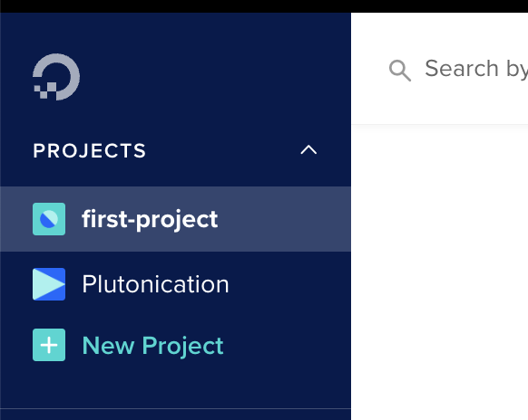
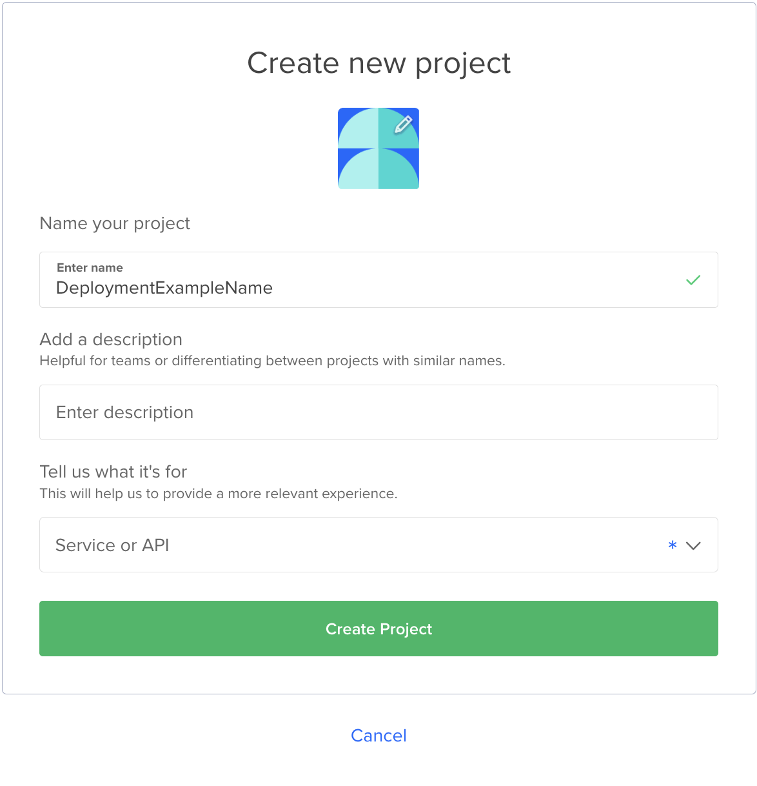
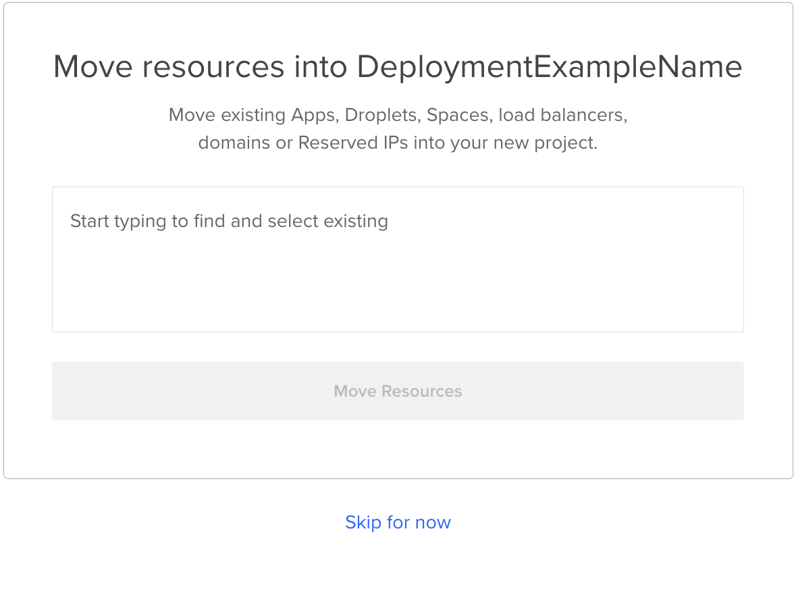
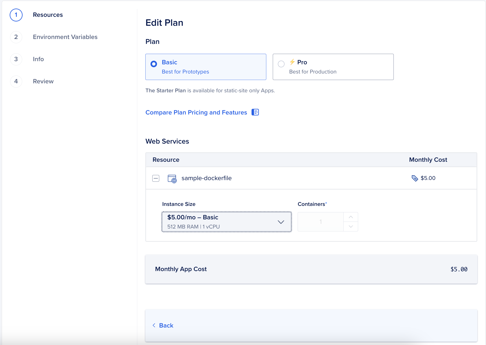
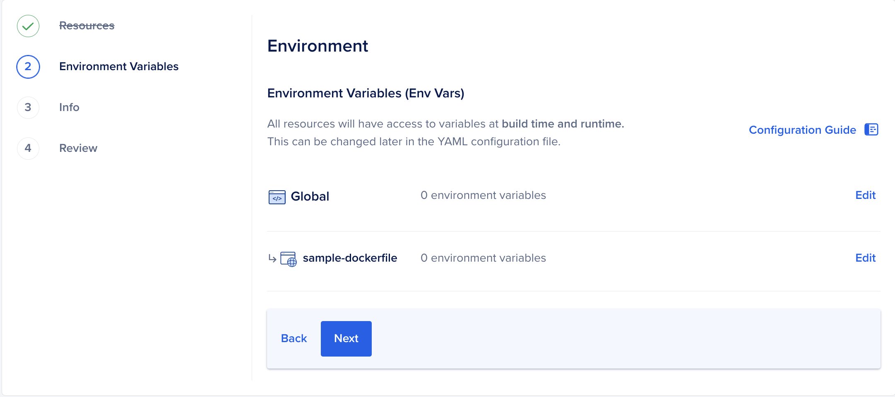
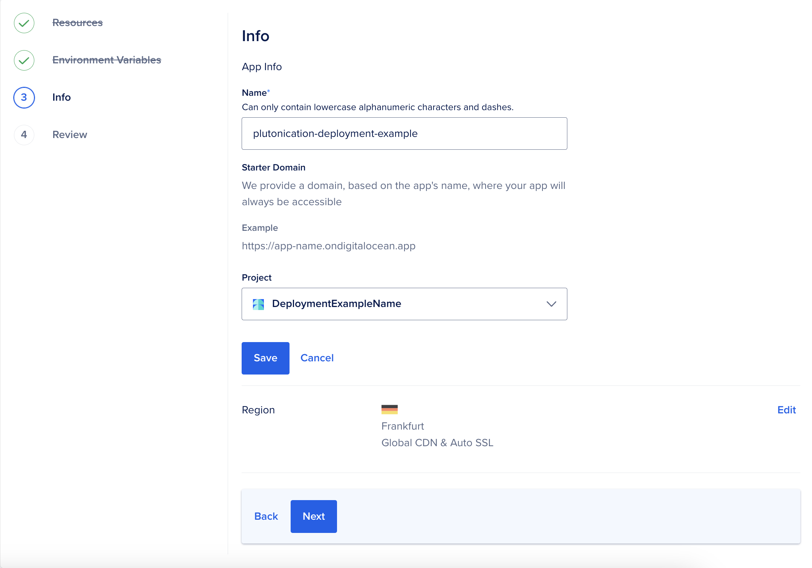
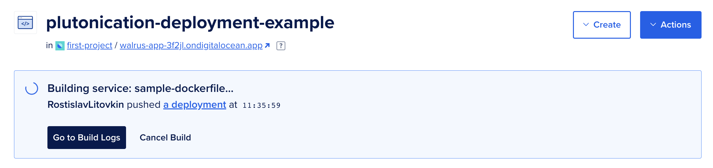
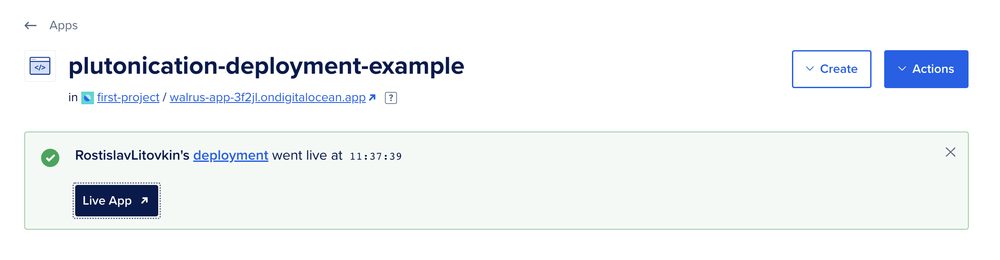

Intro
This documentation explains how to deploy Plutonication Flask Server to Digital Ocean.
Prerequisites
In order to deploy Plutonication to Digital Ocean, you will need to sign in.
Also, I recommend forking the PlutonicationServer repository.
Deployment guide
Firstly, in the dashboard on the right, click on + new project.
Put the name for this project. You can also add a descritpion.
And fill in what it is used for. In this case, it is a service and API.
Lastly, you do not want to move any resources, so you can skip this step.
Then, in your newly created project, click on Deploy your web app.

Now in the sources, select Other: Choose Sample App and in the dropdown menu, select the Dockerfile option.

Select the right plan. Plutonication is not very demanding, so the basic plan should be definitelly enough for start.
Enter environment variables. Plutonication itself does not use any environment variables, so you can leave this empty.
Fill in the rest of the app info. Mainly, select the location of the server.

In the settings tab, edit the app spec. In the YAML file, change the line 19 to include the
correct github link. You can either use https://github.com/RostislavLitovkin/PlutonicationServer.git, or your own.
Once saved, the app will get redeployed and then, you can view it.
 This is what you should see once the website is opened.
Keep in mind that the URL will differ for you.
You can connect to the WebSocket with wss://... URL.